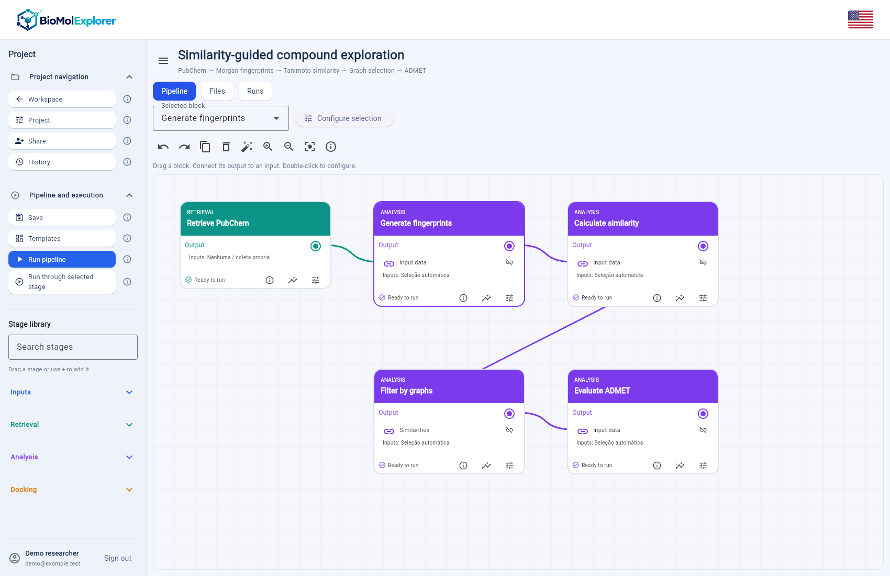
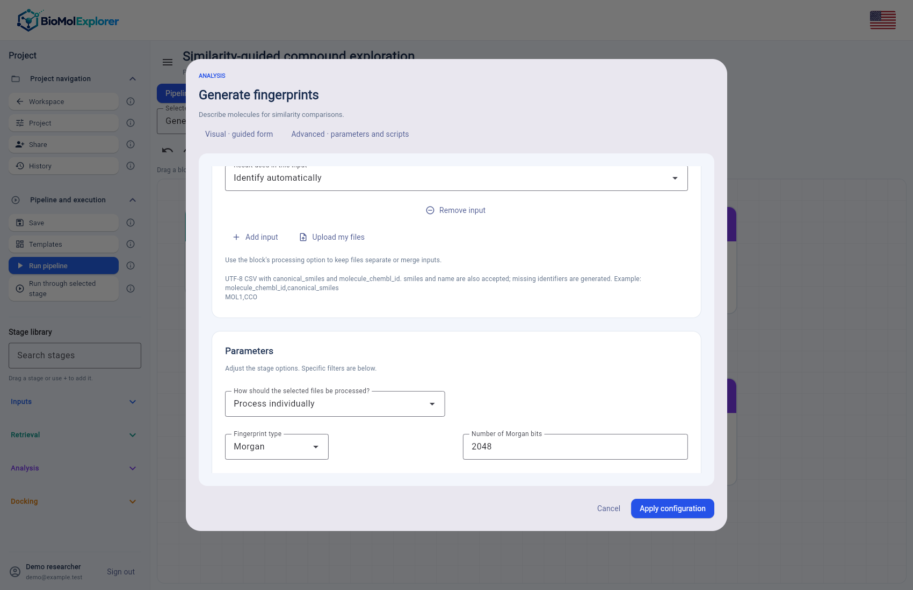
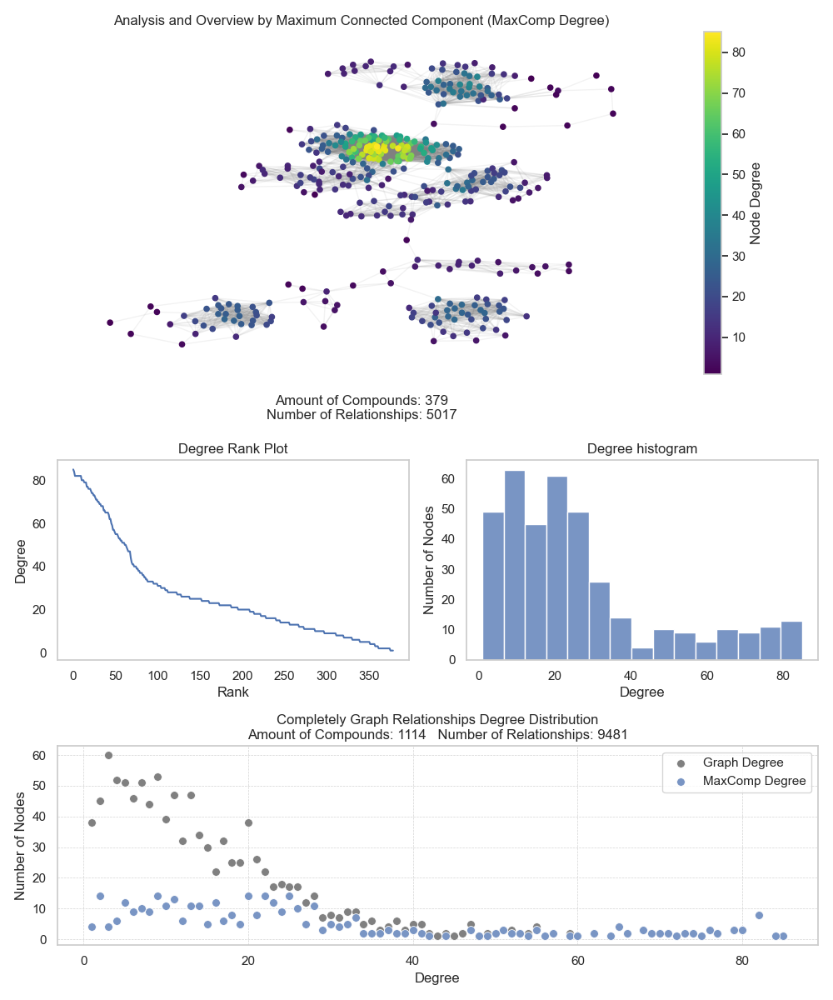
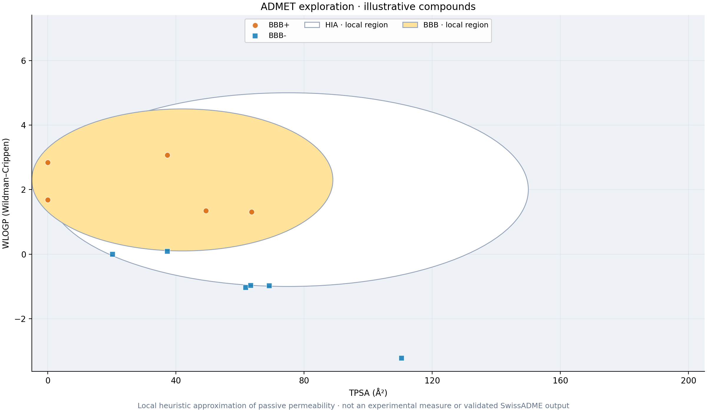
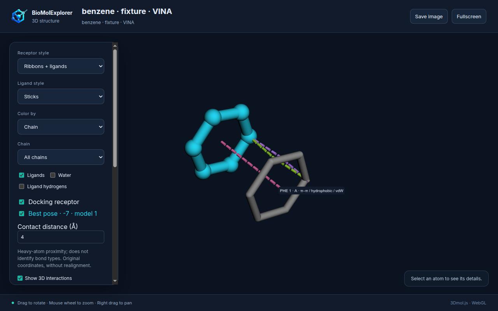
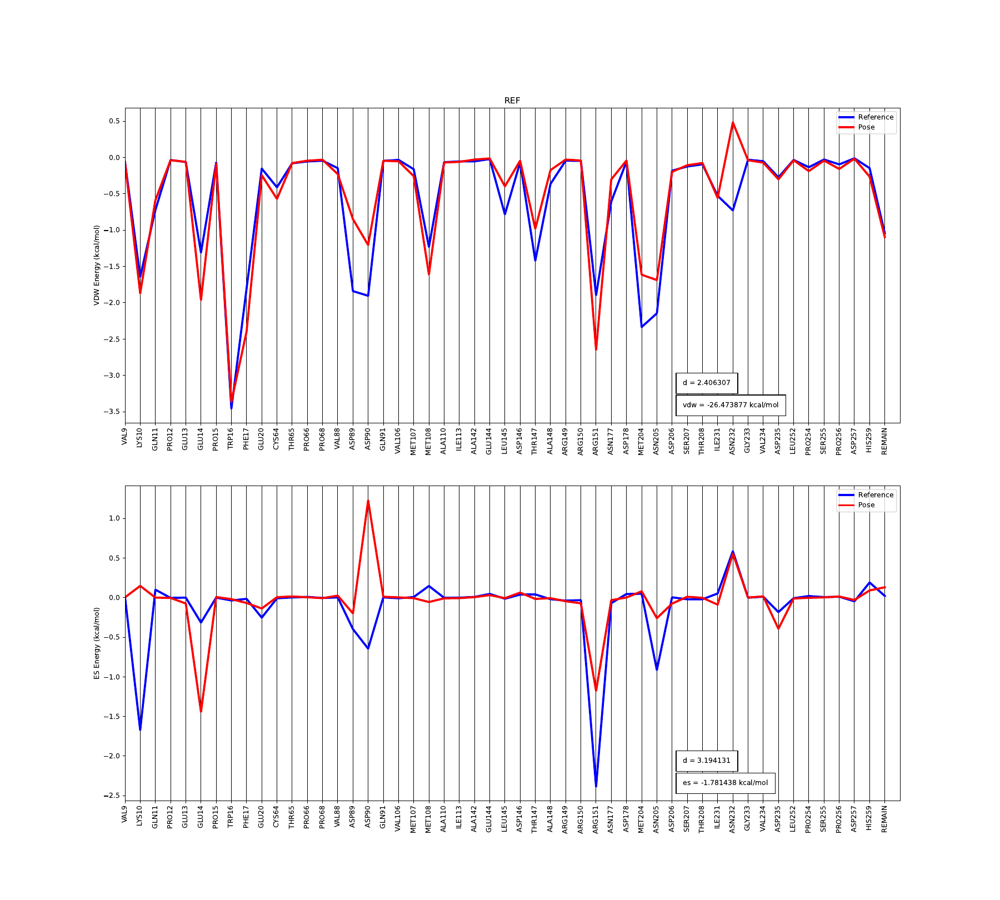

Choose the stages and their inputs
Add blocks from the library, connect compatible ports and select the output files each stage should consume. Use guided forms or advanced JSON.
Retrieve molecular data, build the pipeline your study needs, and keep its inputs, settings and results together. BioMolExplorer combines a Flet workspace with Python services for similarity analysis, indexed graph exploration, ADMET screening, preparation, redocking, docking and molecular dynamics.
Protein structure retrieval and filtering
Bioactivity and target extraction
Large-scale compound libraries evaluation
Automated redocking validation
Consensus docking score integration for advanced ranking
Research profiles, local descriptors and optional trained models
Structural similarity expansion with cross-source deduplication
Private projects, invitations and configurable pipelines
Computer-aided drug design brings together protein structures, compound libraries and bioactivity records. Inconsistent metadata, duplicate compounds and incomplete experimental information make that integration difficult. BioMolExplorer organizes retrieval, filtering and analysis in one project.
Retrieve and standardize datasets from PDB, ChEMBL, PubChem and ZINC, or import compatible files from your own study. Choose a short screening workflow or combine molecular similarity, network analysis and receptor-based docking as your research requires.
The Flet workspace lets researchers create private projects, invite collaborators and connect scientific stages in the order required by their study. Separate ChEMBL and PubChem blocks retrieve compounds; PubChem also accepts a SMILES, CID or name directly and supports similarity searches. ADMET screening, graph selection, preparation, redocking and docking can be configured independently, with results and logs kept for each run. Scientific interpretations still require validation with study data.
Standardized integration pipelines for biological, chemical, and structural data.
Extraction and filtering strategies aligned with therapeutic target investigation.
Construction of molecular affinity networks and connected component analysis.
Local molecular descriptors and screening hypotheses, with optional trained models for absorption, distribution, metabolism, excretion and toxicity endpoints.
A pipeline connects the output of one scientific block to the input of the next. This example expands a PubChem reference, compares molecular fingerprints, selects a connected group and profiles its ADMET properties. The capture below shows this pipeline in the real BioMolExplorer workspace. Expand the configuration examples to inspect each stage.

View full workspace ↗Actual application · demonstration project
The stage library sits on the left; blocks and their typed input/output ports share the central canvas. Select a block and use Configure selection, or double-click its header, to edit it. This capture uses an isolated example project with configured connections; no scientific calculations were run.

View full configuration ↗The real fingerprint editor exposes the algorithm, Morgan radius and bit count alongside input selections. The illustration below lets you browse the same example's stages without launching the application.
Follow the numbered blocks and arrows. Connections define execution order; moving a block in the workspace changes its position.
Add blocks from the library, connect compatible ports and select the output files each stage should consume. Use guided forms or advanced JSON.
Dependencies run first. Inspect stage progress and logs, and reuse compatible completed results when the application offers that option.
Open compound tables, molecular networks and ADMET plots. Download generated files and retain the run's configuration snapshot.
Values here illustrate configuration choices, not a validated screening protocol. PubChem's search cutoff and the local Tanimoto relationship threshold control different steps. Docking can be added with a separate prepared-receptor input; it is optional for this example.
Read the pipeline configuration guide →BioMolExplorer combines automated retrieval pipelines, molecular fingerprinting, graph analysis, and redocking validation into a unified computational ecosystem.
Import compound tables, PDB structures and supported prepared results. Validate files before connecting them to a pipeline.
Practical exampleSearch ChEMBL targets, molecules, similarity or substructure. Select molecules and similars separately for downstream analysis.
Practical exampleFind similar compounds from a manual SMILES, CID or name, or from compounds produced by another block.
Practical exampleExpand an existing ChEMBL collection with a configurable similarity threshold and inspect new compound relationships.
Practical exampleSearch by PDB IDs, UniProt, ligand or text. Filter structures and curate receptor–ligand pairs before preparation.
Practical exampleDownload SMI or MOL2 collections from uploaded ZINC tranche URL lists, with configurable concurrent downloads.
Practical examplePrepare receptors and candidates with Chimera, gas/am1 charges and configurable hydrogens and minimization. Export for Vina, DOCK6 or both.
Practical exampleCalculate RDKit descriptors, BBB/HIA heuristics, physicochemical rules and structural alerts. ADMET-AI trained models require optional setup.
Practical exampleGenerate Morgan, MACCS or pharmacophore fingerprints. Configure Morgan radius and bit width for the study.
Practical exampleCompare fingerprints with Tanimoto or another supported metric, a relationship threshold and optional approximate search.
Practical exampleExplore full graphs, connected components, communities and molecular scaffolds. Inspect molecules and export selected compound tables.
Practical exampleCurate explicit receptor–ligand pairs, prepare with Chimera and redock with Vina. Evaluate RMSD and reference/pose overlays.
Practical exampleDock retrieved or imported candidates against a selected receptor. Configure the search box and inspect scores and 3D poses.
Practical exampleRun rigid or flexible DOCK6 docking with compatible prepared structures. Inspect scores, poses and residue energy footprints.
Practical exampleRank compound/receptor pairs shared by Vina and DOCK6 results using normalized scores. Inspect each available pose.
Practical exampleUse collapsible navigation and execution groups in the sidebar, with contextual help for each action. Drag stages onto a spacious, zoomable canvas, organize their layout, connect their ports, and double-click each block to configure it. Guided forms handle filters and engine settings; advanced users can edit JSON and scientific templates. Start with a ready-made pipeline or bring your own data wherever the backend format allows.
Choose a folder for each project. Export and import its configuration, inputs, results and versions to continue on another computer while reusing compatible completed experiments.
Invite editors or viewers from the project's Share button. Autosaved edits appear for collaborators, while an attributed change history lets owners restore configuration, files and results to an earlier state.
Combine selected output files and validated uploads in each block. Saved file selections are respected without repeating the selection dialog. Explore paginated compound tables directly in your results, or filter interactive ADMET EGG plots by BBB and HIA classification. Click a point to open its molecular 2D structure and download the selected dataset or chart.
Prepared receptors must include the metadata and files expected by the docking protocol. See the input format guide.
Redocking and docking use a project-scoped indexed cache with verified per-item checkpoints. Adding compounds or PDB pairs runs only missing calculations; compatible preparations, Vina poses and DOCK6 sites, grids, minimizations and footprints are reused. Completed items survive interrupted batches. Input, scientific parameter and tool changes invalidate affected calculations, while the existing reuse choice controls recovery. Vina maps remain shared within compatible batches. Individual failures are reported without discarding completed candidates.
Completed runs bring stage summaries, tables, visual results and logs together. Remove obsolete stage results with confirmation and restore files through project history.
Projects, files, permissions, configuration and interactive results.
Input contracts, dependencies, worker processes, progress and compatible result reuse.
Retrieval, RDKit analysis, Chimera preparation, Vina and DOCK6.
The scientific modules remain organized into retrieval and analysis workflows. Above them, the Flet workspace manages accounts, project permissions, files and pipeline dependencies. Each scientific stage runs in a separate Python process, with its own configuration snapshot, outputs and logs. The layers above reflect the application services; the architecture guide documents the current application services and their limits.
Scientific scripts are also available for command-line workflows. Expand the module descriptions or follow the backend guide for inputs and parameters.
Responsible for data extraction, normalization, and integration across molecular, structural, and bioactivity repositories.
Downloads protein structures using EC number, resolution threshold, ligand presence, polymer entity, and experimental method filters.
Retrieves bioactivities, therapeutic targets, molecular entities, and expands the compound set with ChEMBL similars. PubChem is a separate workspace block.
Handles large-scale URI-based molecular library acquisition workflows for virtual screening applications.
Responsible for fingerprint generation, similarity modeling, graph analysis, and automated redocking validation.
Executes automated docking, redocking pipelines, and RMSD-based validation procedures for structural curation.
Molecular property calculations, heuristic ADMET classifications, structural alerts, optional trained-model outputs and exported screening subsets.
Generates molecular fingerprints, computes similarity matrices, and identifies connected molecular components.
Download the GitHub project using Git or Code → Download ZIP, then open a terminal in the source code folder. The Python package requires Python 3.12 or newer.
Standard preparation: configure AmberTools. DOCK6 is required for its docking protocols.
Python/Gemmi selects structures; ff14SB/GAFF and AmberTools prepare and minimize receptors and ligands. Vina uses Meeko and DOCK6 receives assigned MOL2 charges. Chimera 1.17 is optional, used only for explicitly selected legacy or special-system protocols. Scientific changes and validation limits.
Installation and executable checks (English) · Instalação e verificação (Português)
git clone https://github.com/mpiress/BioMolExplorer.git
cd BioMolExplorer
conda env create -f requirements.yml
conda activate BioMolExplorer
python -m pip install -e '.[ui]'
biomolexplorer-ui --web --dock6-path /path/to/dock6-6.11Open http://127.0.0.1:8550 and create your account. If the environment already exists, activate it and install the interface.
biomolexplorer-ui --web --no-browser \
--data-dir ./workspace-data \
--worker-python /path/to/python \
--dock6-path /path/to/dock6-6.11Create the isolated requirements-ambertools.yml environment and configure its root in preparation settings or BIOMOL_AMBERTOOLS_PATH. Standard preparation needs antechamber, parmchk2 and tleap; minimization also needs sander. Do not inject that environment's libraries into the main Python process. Vina and DOCK6 are required by their respective protocols; pass the complete DOCK6 root, containing bin/ and parameters/, to --dock6-path. Molecular surfaces use native Python SES, without standalone DMS. Chimera is only needed for explicit legacy execution.
Use the workspace guide for accounts and pipelines, or the backend guide for CLI usage and parameters. The current executor uses a local Linux backend, SQLite and a bounded queue; see deployment and scientific limitations.
Connect one or more similarity stages, or upload validated external similarity CSVs. Each source produces a separate graph analysis, with isolated compounds preserved and the largest connected component (MCC) highlighted.
Explore full networks and their MCC with degree color scales, pan and zoom, and circular layouts. Hover to identify compounds and click to inspect molecular structures. MCC views show the common molecular fragment and offer downloadable figures combining its image with the network and degree statistics. Read the graph explorer guide.
Common molecular fragments with explicit search status. No default search timeout; optional limits remain configurable.
Structured outputs suitable for machine learning and advanced analytics.

Complement molecular networks with ADMET maps, interactive 3D inspection and residue-level energy profiles. Open an example to inspect the full image; the guides explain how to produce and interpret each result.

View full image ↗01 · ADMET exploration
Filter BBB/HIA classes, inspect a compound's 2D structure and export the selected table or plot. This export uses 11 illustrative compounds calculated with RDKit; the local regions are heuristic and do not reproduce validated SwissADME predictions.
Methods, profiles and interpretation →
View full image ↗02 · Molecular inspection
Choose independent receptor and ligand styles, toggle hydrogens and residue names, and hover over colored traces. This actual viewer capture uses an illustrative benzene/PHE test scene to make overlapping geometric contacts easy to see.
3D controls and interaction criteria →
View full image ↗03 · DOCK6 footprint
Reference and calculated pose curves show van der Waals and electrostatic contributions separately. This output was generated by the real Vina → DOCK6 workflow using the DOCK6 tutorial's 1ABE receptor and reference ligand.
Footprint energy contributions are distinct from the viewer's geometric interaction classification. The tutorial demonstrates execution and presentation, not experimental affinity.
Examples are illustrative. Sources and reproduction details identify the input structures, test scene and native outputs.
Open Vina or DOCK6 results in the local WebGL viewer. Compare the best pose with its docking receptor and an available reference in their original coordinates. Redocking adds crystallographic ligand and complex layers; consensus offers separate 3D views for each engine.
Hover over a trace for its type, residue, chain and distance. Matching legend colors and type filters help identify each relation; coincident traces are separated for inspection.
Classification requires valid chemistry and residue identities; hydrogen bonds require explicit H. When classification is unavailable, heavy-atom distance contacts remain accessible. These 3D relations describe geometry. DOCK6 Footprint separately compares reference/final-pose energies per residue; neither display establishes experimental binding.
Read the complete guides in English or Portuguese. Browser pages and Markdown sources cover the same implementation and can be opened locally, including the current molecular viewer, docking results and interaction controls.
Installation, authentication, project sharing, stage configuration, uploads and execution monitoring.
Read in EnglishConda environment, command line, job services, available operations, inputs and outputs.
Read in EnglishCode organization, process isolation, contracts, technical corrections, verification and current limits.
Read in EnglishResearch profiles, local methods, optional ADMET-AI setup and model limitations: ADMET guide in English · Guia ADMET em português.
If BioMolExplorer or derived datasets contribute to your research, please provide proper academic attribution.
Pires da Silva, M., Alves de Oliveira, T., Habib Bechelane Maia, E., Oliveira Mendes, G., Cristina Moreira Damázio, L., Brito Barbosa, D., Andrade Leite, F. H., Falkoski, L., Flores de Souza Marra, I., Siqueira Valle, M., Silva Matos Andrade, L., Čmelo, I., Fayne, D., Batista de Carvalho, P., Marques da Silva, A., & Gutterres Taranto, A. (2025). Data-driven chemical domain for polypharmacology agents: Focus on Alzheimer’s disease. Mendeley Data. doi:10.17632/5njg46dfj4.3